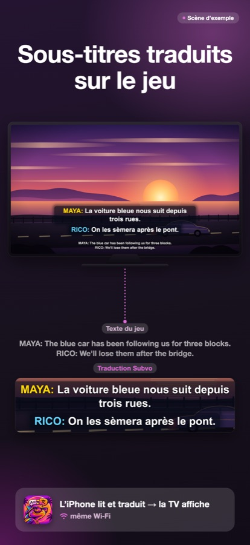
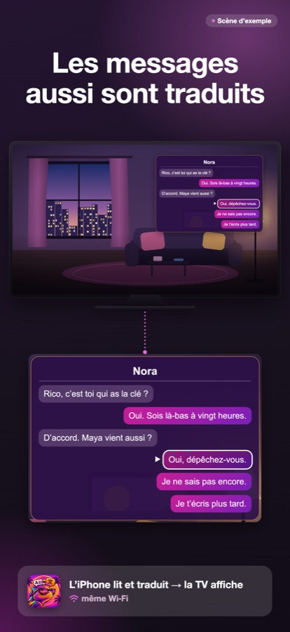
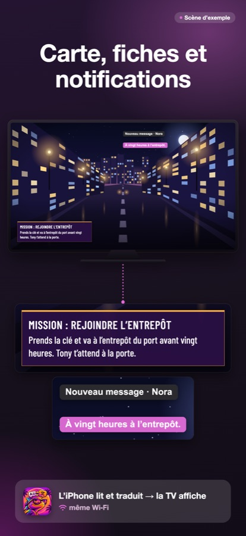
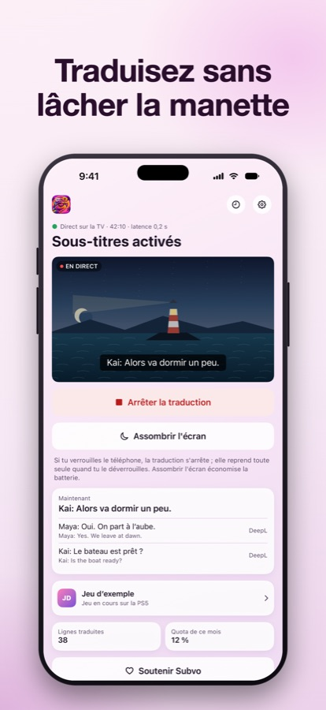
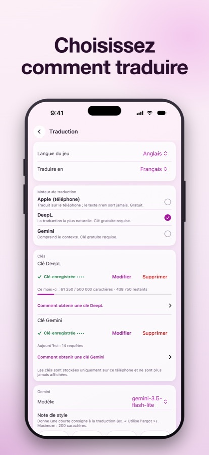
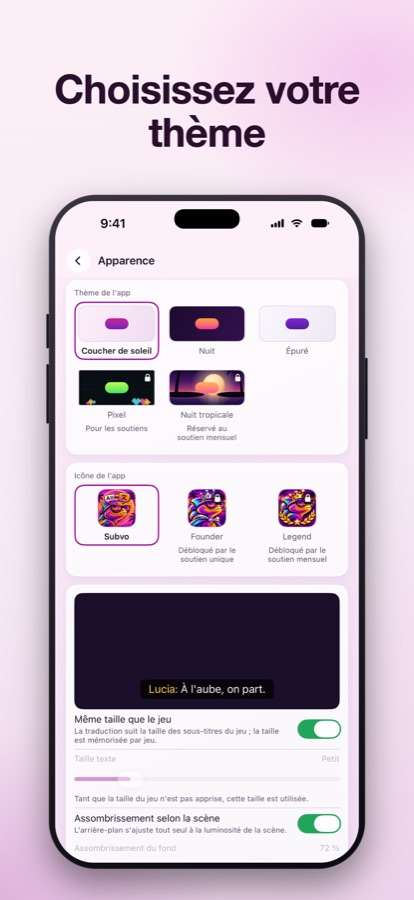

Subvo
SubvoLe texte du jeu, sur la TV, dans votre langue.
Subvo lit sur l'iPhone le texte de votre jeu PS5, le traduit et affiche la traduction sur la TV, juste par-dessus le jeu. Inutile de lâcher la manette.
Gratuit et sans publicité. iPhone, PlayStation 5 et TV Samsung ou LG.

Pas seulement les sous-titres
En plus des dialogues, dans les jeux compatibles, il traduit aussi les messages du téléphone du jeu, les actualités, les fiches de quête et les notifications qui apparaissent dans un coin.
Dialogues
Le nom de la personne qui parle garde sa couleur d'origine, et la traduction recouvre le sous-titre du jeu.

Messages du téléphone
Les conversations ouvertes sur le téléphone du jeu sont traduites à l'emplacement même des bulles.

Fiches et notifications
Les fiches de quête et de carte, les messages qui glissent sur le côté et les conseils dans un coin sont aussi traduits.
De la console à la TV en trois étapes
L'iPhone se connecte à la console
À votre propre PS5, via Remote Play. Vous vous connectez à votre compte Sony sur la page de Sony ; Subvo ne voit jamais votre mot de passe.
Il lit le texte et le traduit
La lecture se fait sur le téléphone. La traduction passe par la traduction d'Apple sur l'appareil ou, si vous le souhaitez, par votre propre clé DeepL ou Gemini.
Il l'affiche sur la TV
La traduction apparaît par-dessus le jeu dans l'app Subvo TV, sur le même Wi-Fi. Le téléphone vous aide à installer l'app TV.
MAYA: The blue car has been following us for three blocks.
RICO: We'll lose them after the bridge.
MAYA: La voiture bleue nous suit depuis trois rues.
RICO: On les sèmera après le pont.
La traduction sans attendre
Pour certains jeux, un pack de traduction prêt à l'emploi (vers le turc) se télécharge tout seul. Les lignes présentes dans le pack s'affichent instantanément, sans internet. Le pack de Grand Theft Auto VI compte plus de 738 000 lignes et existe aussi en arabe.
Pour les autres jeux et les autres langues, c'est le moteur de traduction choisi qui traduit. 12 langues cibles sont disponibles.
Avant de commencer
- Votre propre PlayStation 5 et votre compte PlayStation.
- Une smart TV Samsung (Tizen) ou LG (webOS).
- Téléphone, console et TV sur le même réseau Wi-Fi.
- iOS 26 pour la traduction sur l'appareil. Sur un iOS plus ancien, il vous faut votre propre clé DeepL ou Gemini.
Pas de PS5 ? Essayez une scène d'exemple avec « Voir en action » dans l'app.
Vos données restent chez vous
- Subvo n'a aucun serveur ; aucune donnée ne va au développeur.
- Ni publicité, ni analyse, ni suivi.
- Votre connexion PlayStation et la clé d'appairage restent uniquement dans le trousseau du téléphone.
- La traduction est gratuite et entièrement ouverte. Si vous souhaitez soutenir l'app, vous ne débloquez en échange qu'un badge, des thèmes et des icônes.
Vous choisissez l'apparence
Taille du texte, couleur, fond et disposition se règlent dans les Réglages. L'app est disponible en sept langues.



Le code est ouvert à tous
Subvo est une app open source sous licence AGPL-3.0. Le code source et les informations de licence sont sur GitHub.
Une question, un problème ?
Questions, problèmes ou suggestions : subvo2026@gmail.com
Joindre un enregistrement fait depuis Réglages › Avancé › « Signaler un problème » aide à résoudre le souci. Indiquez aussi le modèle de votre téléphone, la version d'iOS et la marque de votre TV.
- De quoi ai-je besoin ? Un iPhone (iOS 16 ou ultérieur), une PS5 et une smart TV sur le même réseau Wi-Fi.
- Comment se fait la traduction ? Certains jeux ont un pack de traduction prêt à l'emploi. Sinon, c'est la traduction d'Apple sur l'appareil (iOS 26 ou ultérieur) ou votre propre clé DeepL ou Gemini.
- Où vont mes données ? Aucune donnée n'est envoyée au développeur. Détails dans la politique de confidentialité (en anglais).
- Comment gérer un abonnement ? Sur l'iPhone : Réglages › Compte Apple › Abonnements. Les achats de soutien sont facultatifs ; toutes les fonctions de l'app sont gratuites.